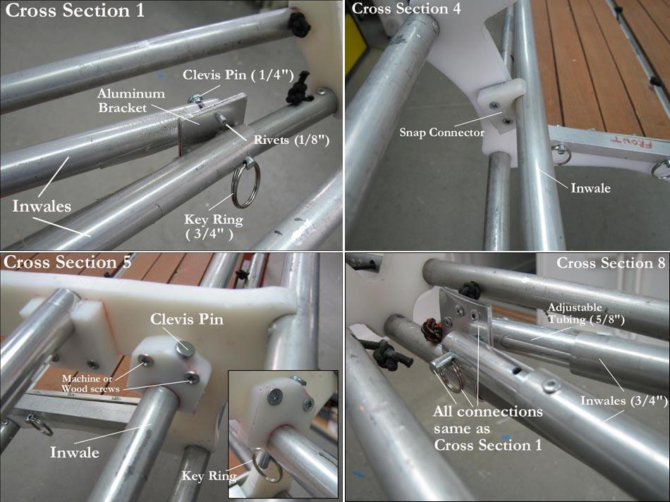

| "Arched" Inwale Instructions ( 2 of 5 ) | Menu Last Page Next Page |
|

Insure that the kayak is positioned on the strongback or on cradles in a position that provides the correct rocker before installing the inwales. This is an important step as the inwales, under tension, will hold this pre-determined position.
1. Cross Section 1 - Assembly begins at the keel just aft of cross section 1. An aluminum connector is bent to shape and attached with 1/8in medium length rivets as are used with the older "internal bracing system" and all stringer connections as illustrated in the "Frame Construction Menu". 3/4in aluminum inwale tubes are drilled and attached with 1/4" Clevis pins / key rings. Bolts can be used but are a slower method of assembling the frame.
2. Cross Section 5 - HDPE snaps are screwed onto cross section 5 at the standard inwale location if they were not originally drilled and fitted when the cross section was created. Wood screws or machine screws / nuts can be used for attaching the snaps. After snapping in the inwales, drill a hole through the top of the snap connector and through the inwales with a 1/4in drill bit. A clevis pin / key rig are used to secure the inwales. Due to the outward tension generated by the inwales, the clevis pins may not be required, but they do assure that the inwales cannot unsnap while in use.
3. Cross Section 8 - After attachment to cross section 5, bend the tubes down and inward for attachment to the keel near cross section 8. The 5/8in inserts as seen in the pic allow proper positioning of the inwale prior to drilling. After drilling of the inwales and the aluminum connector, use a clevis pin / key ring to secure the inwales. Next, drill through the inwales and the inserts and connect them with rivets. One rivet is shown, but 2 or even 3 are used as in all standard insert / stringer connections.
It is posssible to adjust the tension of the inwales and with it the amount of rocker by drilling several holes 1/2in apart and using machine screws instead of rivets to allow adjustment of the insert. In testing, I was able to radically alter the amount of rocker and with it frame stiffness by changing the length of the inwales. In this scenario, the inwales are attached at cross sections 1 and 8 first, and then the inwales are connected to cross section 5. By experimenting, you will be able to determine the rocker required, therby creating an adjustable frame flex system. This difers from steps 1 thru 3 above which require connection of the inwale to cross section 5 prior to connection at cross section 8.
4. Cross Section 4 - Cross section 4 is connected after sections 1 , 5, and 8. A snap connector is screwed into postion wherever the inwales are resting against the inside of cross section 4. This will vary between kayaks based on the shape and height of the cross sections. You may also want to attach additional snaps at other cross sections, though I did not feel that this was required during testing. When cutting the inwales to make them take-apart sections for folding, use 8 inch inserts ( 4in per side) to retain tube tension. In addition, use spring pins to keep the tubes from seperating when under tension. |
|